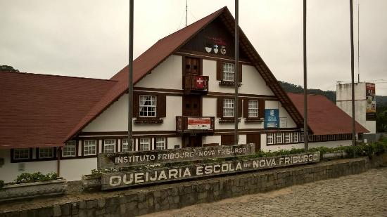
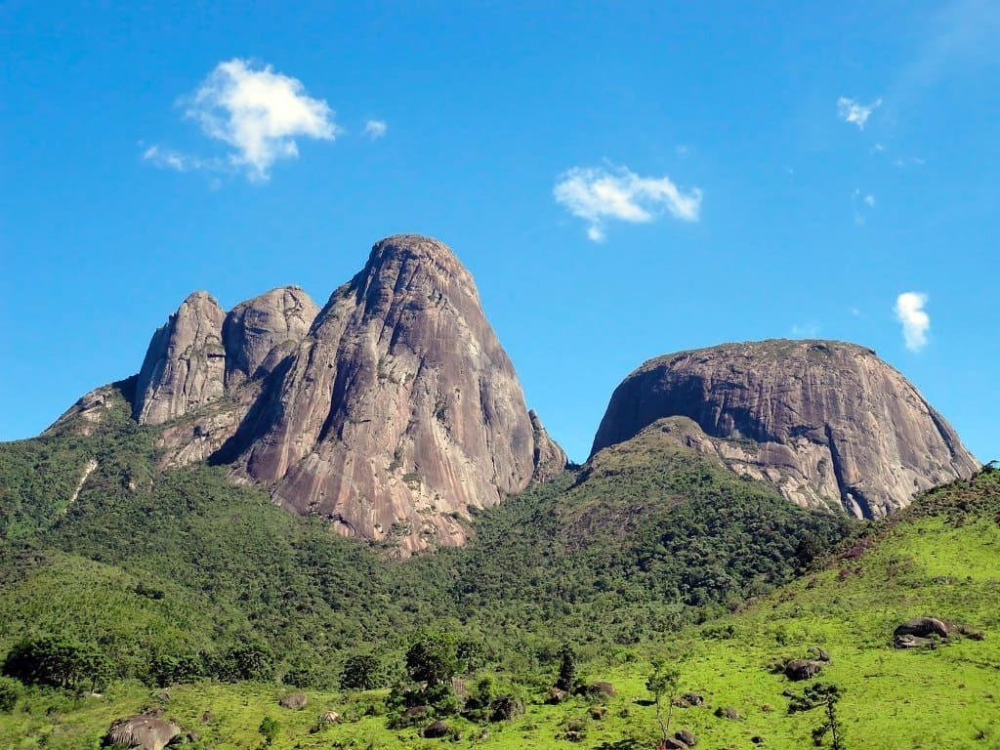
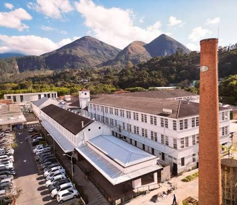
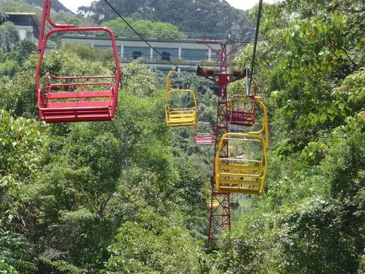
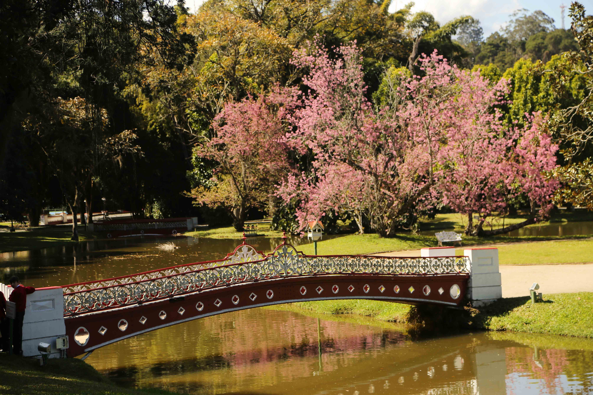

Nova friburgo possui diversos pontos turísticos, mas é principalemnte conhecida pelas suas montanhas e serras.
Casa Suíça

O complexo da Casa Suíça é um espaço vivo e dinâmico, que compreende a Frialp Queijaria e Chocolataria, Memorial da Colonização Suíça, galeria de artes, em seus jardins o visitante encontra o Encanto e arte artesanato, Museu de taxidermia, Loja do Porquinho e Ateliê Thaís Castro. Em breve novas atrações.
Parque Estadual dos Três Picos

Parque Estadual dos Três Picos (PETP) localiza-se na Região Serrana do Estado do Rio de Janeiro, no Brasil. O seu nome evoca os Três Picos de Friburgo, imponente conjunto de montanhas graníticas cuja altitude chega a 2 366 metros acima do nível do mar e é o ponto culminante de toda a Serra do Mar.
Espaço Arp

A antiga fábrica de Rendas Arp se transformou num poderoso ecossistema criativo onde empreendedores, artistas, produtores locais e visitantes compartilham energia entre si.
Jarim do Nego

O Jardim do Nêgo é um museu de escultura a céu aberto localizado no distrito de Campo do Coelho, no município de Nova Friburgo. Criado pelo artista plástico Geraldo Simplício, conhecido como Nêgo, o espaço se destaca por suas impressionantes esculturas esculpidas diretamente nos barrancos de terra, integrando arte e natureza de maneira singular.
Teleférico

O Teleférico do Suspiro é um sistema de teleférico que opera no município brasileiro de Nova Friburgo, no estado do Rio de Janeiro. Liga a Praça do Suspiro a dois estágios localizados no Morro da Cruz, possibilitando uma vista panorâmica da cidade. Inaugurado em 1975, o sistema possui uma extensão de cerca de 1.500 metros
Country Club

Country Club é um lugar muito acolhedor que antigamente era a residência do barão de Nova Friburgo, e hoje é um destino muito querido pelos visitantes e moradores de friburgo perfeito para encontros, festas e piqueniques. Além disso, possui clubes que voê pode participar para utilizar a piscina ou realizar um esporte.